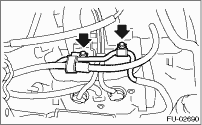
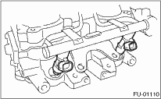

1. Release the fuel pressure. 
2. Disconnect the ground cable from the battery.

3. Open the fuel filler flap lid, and remove the fuel filler cap.
4. Remove the air cleaner case.
5. Remove the power steering pump and power steering reservoir tank.
(1) Remove the front side V-belt.
(2) Remove the bolts which hold the power steering pipes to the intake manifold protector.

(3) Remove the bolts which install the power steering pump to the bracket.

(4) Disconnect the connector from power steering pump switch (A).

(5) Remove the power steering reservoir tank from the bracket by pulling it upward.

(6) Place the power steering pump and tank on the right side wheel apron.

6. Remove the spark plug cords from spark plugs (#1 and #3 cylinders).
7. Remove the fuel pipe protector RH.

8. Disconnect the connectors (A) from fuel injector.
9. Remove the harness band (B) which holds the engine harness to injector pipe.

10. Remove the bolt which holds fuel injector pipe onto intake manifold.

11. Remove the fuel injector while lifting up the fuel injector pipe.

1. Release the fuel pressure.
2. Remove the battery.
3. Open the fuel filler flap lid, and remove the fuel filler cap.
4. Remove the spark plug cords from spark plugs (#2 and #4 cylinders).
5. Remove the fuel pipe protector LH.

6. Disconnect the connectors (A) from fuel injector.
7. Remove the harness band (B) which holds the engine harness to injector pipe.

8. Remove the bolt which holds fuel injector pipe onto intake manifold.


9. Remove the fuel injector while lifting up the fuel injector pipe.